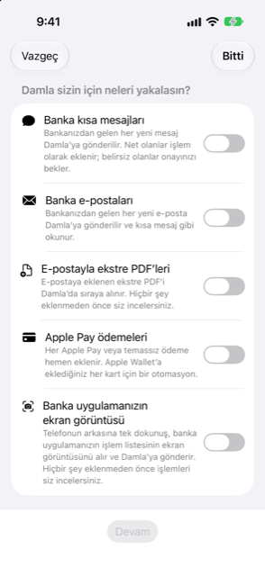

Kılavuz › Otomatik kayıt
Otomasyon kurulum sihirbazı
Ayarlar > Otomasyonlar > Adım adım kurun.
Kurulum sihirbazı, Damla'yı besleyen Kısayollar otomasyonlarını yapmanızı, her seferinde bir yakalama türü olmak üzere, adım adım gösterir; sonra çalıştığını doğrulamak için ilk gerçek bildiriminizi izler. iOS bir uygulamanın otomasyon yaratmasına izin vermez; bu yüzden her otomasyonu bir kez, elle, Kısayollar uygulamasında siz yaparsınız; sihirbaz her adımda yol gösterir ve sonucu kontrol eder.

Ne zaman kullanılır
- Damla'yı kuruyorsunuz ve otomatik yakalamasının çalışmasını, adımlar önünüze diziliyken istiyorsunuz.
- Bir yakalama türü daha eklemek istiyorsunuz — diyelim ki banka e-postaları — ve onun adımlarını birebir gerekiyorsunuz.
- Elle yaptığınız bir otomasyon hiç çalışmadı ve adımlar karşınızdayken onu yeniden yapmak istiyorsunuz.
Adım adım
- Ayarlar'ı, sonra Banka mesajları ve ekstreler'i, sonra Otomasyonlar (Kısayollar)'ı açın ve Adım adım kurun'a dokunun.
- İlk sayfada, Damla sizin için neleri yakalasın?, istediklerinizi açın. Her seçimin altında tek satırlık bir açıklama vardır:
- Banka kısa mesajları — bankanızın her yeni kısa mesajı Damla'ya gönderilir; açık olanlar işlem olarak eklenir, belirsiz her şey onayınızı bekler. - Banka e-postaları — bankanızın her yeni e-postası Damla'ya gönderilir ve kısa mesaj gibi okunur. - E-postayla ekstre PDF’leri — e-postaya ekli PDF Damla'da sıraya girer; hiçbir şey eklenmeden önce siz gözden geçirirsiniz. - Apple Pay ödemeleri — her Apple Pay veya temasla ödeme hemen eklenir; her kart için bir otomasyon, Apple Wallet'a eklediğiniz kartlar için. - Banka uygulamanızın ekran görüntüsü — telefonun arkasına bir dokunuş, banka uygulamanızın işlem listesinin ekran görüntüsünü alır ve Damla'ya gönderir; hiçbir şey eklenmeden önce işlemleri gözden geçirirsiniz.
- Devam'a dokunun. Seçtiğiniz her tür, sırayla kendi sayfasını alır.
- Her sayfada, tür gerektiriyorsa üstte göndereni yazın ve Kaydet'e dokunun: banka kısa mesajları için bir gönderen adı veya numarası; banka e-postaları ve ekstre PDF'leri için bir gönderen e-posta adresi (veya bir kısmı); Apple Pay için kartın son 4 rakamı. Ekran görüntüsü türü gönderen gerektirmez. Alan, o tür için daha önce kaydedilmiş ilk gönderenle, varsa, başlar.
- Aynı sayfada, Kısayollar uygulaması için numaralı adımları okuyun. Her adımın metnini seçip kopyalayabilirsiniz.
- Kısayollar uygulamasını aç'a dokunun ve oradaki adımları izleyin. Ya da Apple Intelligence istemini kopyala'ya dokunun ve istemi Kısayollar uygulamasının Apple Intelligence'ına yapıştırın; otomasyonu sizin için o kursun. İstem panoya geçince düğme Kopyalandı der.
- Bir sonraki türe geçmek için İleri'ye, öncekini düzeltmek için Geri'ye dokunun.
- Son sayfa Dene'dir. Kendinize bir test gönderin: otomasyonun o gönderenden gerçek bir kısa mesaj, e-posta veya ödemeyle bir kez tetiklenmesini sağlayın ya da kısayolu çalıştırın.
- Sayfa, siz üstündeyken bir şey gelene dek İlk bildirim bekleniyor… gösterir; sonra Damla'nın aldığı şeyle ve Hazırsınız sözleriyle yeşil bir onay işareti gelir. Bitti'ye dokunun. Bankanızın yanında değil misiniz? Sonra denerim'e dokunun ve size uyan zamanda deneyin.
Bir şey gelmezse
- Otomasyonlar ekranındaki Çalışıyor mu? bölümü, Damla'ya henüz bir şey ulaşıp ulaşmadığını ve son banka mesajının ne zaman geldiğini söyler.
- Bir otomasyon kurduktan sonra kendinize bir test mesajı gönderin. Bir dakika içinde Son bildirimler'de görünmezse, otomasyon çalışmıyordur: Hemen Çalıştır olarak ayarlandığını kontrol edin.
- Bir ekstre veya ekran görüntüsü Son bildirimler'de çıkmaz — onun yerine gözden geçirmeyi bekler. Sihirbaz o sırayı da izler ve gözden geçirmeye bir ekstre geldiğinde size haber verir.
Bilmekte fayda var
- Sihirbazın kendisi Kısayollar'da hiçbir şey yaratmaz. Yazdığınız gönderenleri kaydeder, adımları gösterir ve ilk bildirimi bekler. Otomasyonu bir kez, Kısayollar uygulamasında siz yaparsınız.
- Adımlar ve istem, Otomasyonlar ekranında gösterilenlerin aynısıdır; orada adımları metin olarak ve bir göndereni de kopyalayabilirsiniz.
- İptal ve Bitti sihirbazı kapatır. Yol boyunca kaydettiğiniz gönderenler kayıtlı kalır ve sihirbazı istediğiniz zaman yeniden açabilirsiniz.
- iPhone'unuzdaki ifadeler, adımlardan biraz farklı olabilir.
- Damla'nın eylemleri Kısayollar'da eksikse, Otomasyonlar ekranı aranacak eylemleri listeler — Damla’ya ekle, Damla’ya ekstre ekle, Damla’ya kart ödemesi ekle, Ne kadar harcayabilirim — ve ne yapılacağını söyler: Damla'yı açın, Kısayollar'ı tamamen kapatıp yeniden açın; eylem hâlâ eksikse iPhone'u yeniden başlatın.
İlgili
- Otomatik yakalama nasıl çalışır
- Banka metinleri ve e-postaları
- Apple Pay ve Wallet ödemeleri
- Sorun giderme
Anlaşılmayan ya da eksik bir şey mi var? support@raveniq.ai adresine yazın ve hangi sayfa olduğunu belirtin.